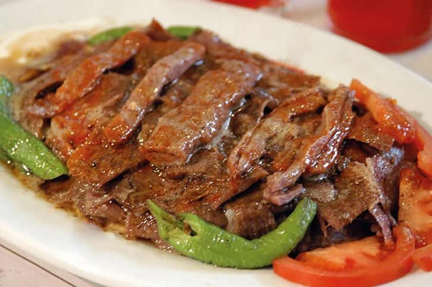

İskender
İskender, ince dilimlenmiş döner eti üzerine yoğurt ve tereyağı sosuyla servis edilen lezzetli bir Türk yemeğidir. Tatlı biber salçası ve taze ekmekle servis edilir.

Yaprak Sarma
Yaprak sarma, asma yaprağı içine sarılmış pirinç, soğan ve baharatlarla doldurulmuş geleneksel bir Türk mezesidir. Genellikle yoğurtla servis edilir.
Lahmacun
Lahmacun, ince bir hamur üzerine baharatlı kıyma, biber salçası ve soğan karışımıyla hazırlanan Türk mutfağının nefis bir yiyeceğidir.